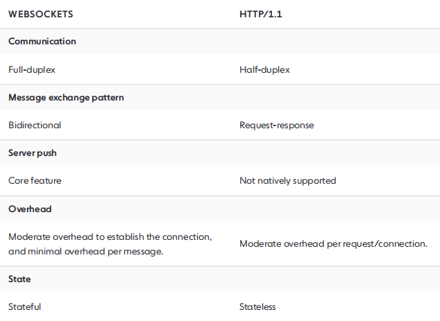
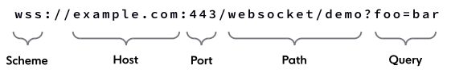

WEBSOCKET
What is WebSocket?
Initially called TCPConnection, the WebSocket interface made its way into the HTML5 specification, which was first released as a draft in January 2008. The WebSocket protocol was standardized in 2011.
WebSocket is :
- bidirectional
- full-duplex
- persistent

Comparing WebSockets and HTTP
URI schemes and syntax
- ws, used for unencrypted connections.
- wss, used for secure, encrypted connections over Transport Layer Security (TLS).

Opening handshake
GET wss://example.com:8181/ HTTP/1.1
Host: localhost: 8181
Connection: Upgrade
Upgrade: websocket
Sec-WebSocket-Version: 13
Sec-WebSocket-Key: zy6Dy9mSAIM7GJZNf9rI1A==
HTTP/1.1 101 Switching Protocols
Connection: Upgrade
Sec-WebSocket-Accept: EDJa7WCAQQzMCYNJM42Syuo9SqQ=
Upgrade: websocket
Closing handshake
The WebSocket constructor
const socket = new WebSocket('wss://example.org');
Events
- open
Events
- error
Methods
- send()